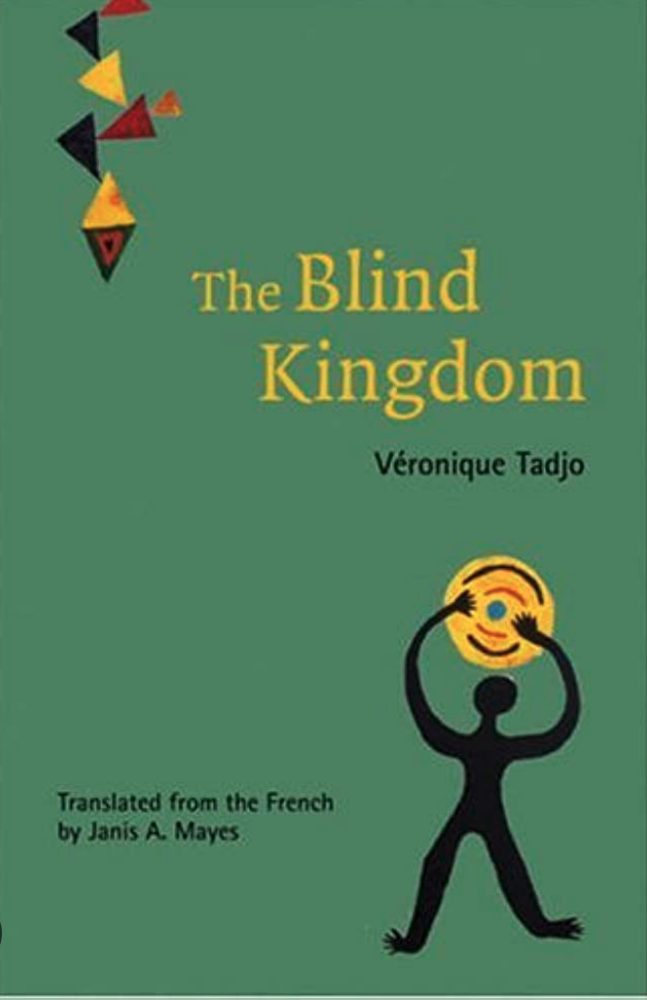

with the ability to see fight to free it.

he is thrown into a war with magic and mythical creatures.

The reason for his pursuit is hidden within the truth of his identity.

like school, girls, bullies, and family.
I decided to take this course this summer because I wanted to learn more about Web Programming. I don't have any experience with web programming and I have taken a few CS classes at Tufts so far. I'm looking forward to expanding my knowledge and skill in the world of programming.
I like Panera Bread because the food taste fresh and it's healthy.
| Book Name | Cover | Author | Summary |
|---|---|---|---|
| The Blind Kingdom |  | Véronique Tadjo | A kingdom that is ruled by a blind king suffers as some people with the ability to see fight to free it. |
| Eragon | |
Christopher Paolini | A young boy discoveries a dragon egg. After the egg hatches, he is thrown into a war with magic and mythical creatures. |
| Crispin | |
Avi | A peasant boy is suddenly under chase by soldiers after his mother
passes away. The reason for his pursuit is hidden within the truth of his identity. |
| Diary of a Whimpy Kid | |
Jeff Kinney | Greg Heffley navigates life with his friend Rowley facing
challenges like school, girls, bullies, and family. |